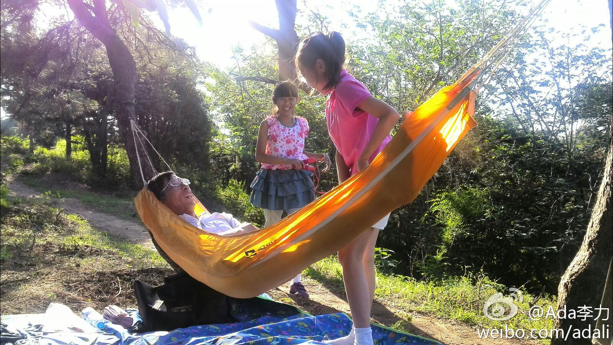
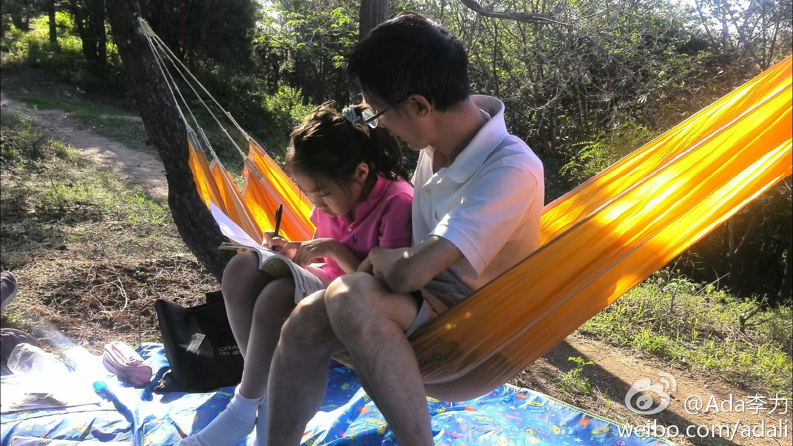
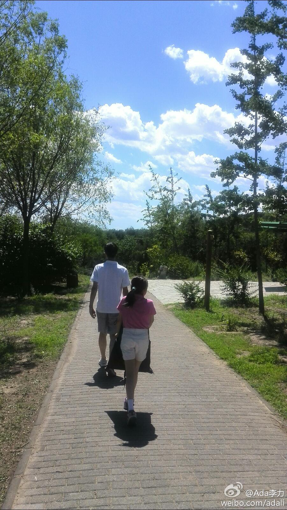

周六这么好的天，朋友有去延庆的，有去植物园的，明俊都不同意带姣姣去。他把地点选在了离家10分钟距离的老山公园，在那儿呆了整整一下午后，他颇遗憾地说：看来在外学习还是不行，还是都玩去了。原来他是要搞户外课堂，博士想法就是与众不同。 
看到一个数据，医学从业者有高达95%的人，不同意自己的孩子学医。我也曾经想过学医，当时的高考成绩上哪所医学院都没问题。当大夫的父亲没有直接反对，说帮我去问问他同事们的意见。回来后告诉我，他问了二十多个同事，没有一个赞同我报考医学院。－ 二十多年过去了，还是这种状况。
我妹妹后来倒是上了医学院，出国前还当了一段时间的儿科大夫。不过我一直不觉得她会成为一个好大夫，因为她是我们家几个孩子中脾气最坏的。^_^ 她去美国后，读了IT专业的硕博，现在是IT圈人士啦。－ 现在倒是我，要从IT圈，跑到医疗圈去了。
妹妹在医学院时的成绩倒是很好的，后来跟同班一女生分到同一家医院。科室主任说过好几次，这两人要是能综合下就好了。那位女同学跟患者交流很耐心和善，但专业不精，脑子有些糊涂，而我妹妹跟那位女同学，刚刚相反。@Ada李力:我妹妹后来倒是上了医学院，出国前还当了一段时间的儿科大夫。不过我一直不觉得她会成为一个好大夫，因为她是我们家几个孩子中脾气最坏的。^_^ 她去美国后，读了IT专业的硕博，现在是IT圈人士啦。－ 现在倒是我，要从IT圈，跑到医疗圈去了。
医学人文的范畴，其实就是心理学和社会学。这样来看，还是有交集的。@Ada李力:我一直觉得，做好#社区运营#，心理学，社会学，管理学的知识会非常有帮助。心理学更常用在分析典型用户的动机和行为上，社会学研究的是群体行为，而管理学对规范和引导用户之间的互动会很有帮助。